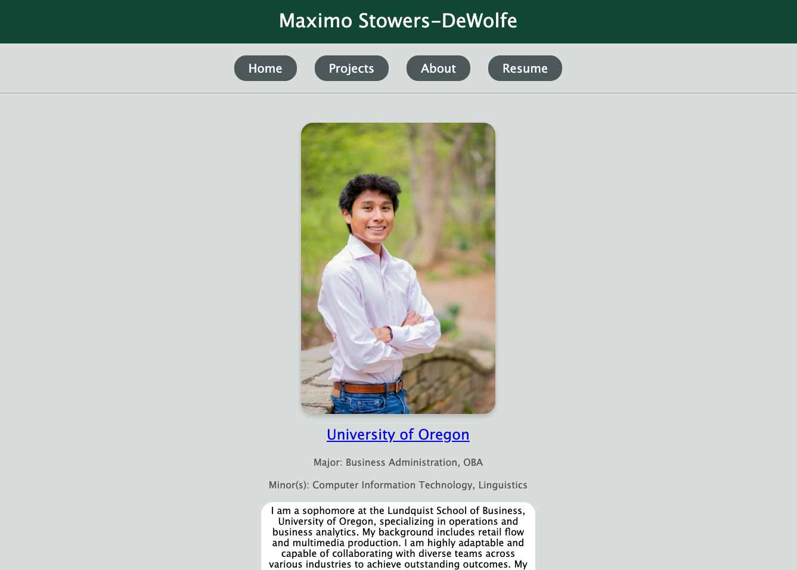

Project 7 is the final prokect for CIT 281, where we create a personal website hosted on GitHub. This website serves as a portfolio to showcase our work and skills. The project involves creating a GitHub repository, adding content to it, and pushing changes to GitHub using Visual Studio Code. The website is built using HTML, CSS, with a possible future integration of JavaScript, and it includes various sections. The idea is to have this website grow overtime and showcase more of my work as we progress through the CIT minor.
In Lab 8, we futhered our practice with server-side JavaScript by creating a simple Node.js application. The ultimate goal of this server was to accept GET requests that woulde return a JSON object containing information about an image. This project was also the first project where we connected our routes to an external sites, in this case JSONPlaceholder.
In Lab 9, we worked with GitHub to learn about release based workflows. We followed the GitHub "Create a relesasebased workflow" activity. During this activity, we learned how to go through version releases, and how to best use release version naming to indicate what kind of release it is. We did this using the GitHub release feature, which made it easy to create a new release.